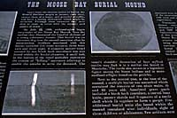
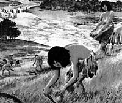

|
|
"Environmentally Sensitive Area". Please be careful where you walk and try not to disturb the natural environment. For additional information please contact Tourism Saskatchewan. | ||
| Moose Bay Burial Mound | |||
| GPS: | 50d 36.83m N | 102d 41.02m W | 1795 feet |
| Location: | Crooked Lake Provincial Park. | ||
You are standing on the top of a one thousand year old Indian burial mound looking south across the Qu'Appelle River Valley and Crooked Lake. The mound itself is fifty feet in diameter and five feet high. In order to get here, you must first hike up a hill which is over five hundred feet high and of a forty-five degree grade. | |||
Looking beyond this spot you will see a majestic hill which dominates the valley slope and forms the apex of a triangular group. At the summit is a conical mound, five feet high and fifty feet in diameter, which rises above the surface of the plateau. The Moose Bay Burial Mound was built approximately 950 years ago, shortly before the Norman conquest of England. In 1968 it was excavated by archaeologists from the Saskatchewan Museum of Natural History. Their findings revealed how the mound was constructed and some of the purposes it fulfilled. | |||
Mound burial was the final step in a long and complex mourning ritual. A few days after a human death, the body was tightly wrapped in buffalo hides and placed upon a scaffold with gifts of food and implements. Intensive mourning, distribution of possessions and a feast often accompanied these religious ceremonies. About a year after the ceremony, the band terminated its mourning by constructing a mound. First, the builders stripped the sod from a circular area and erected a wooden post in the centre of this depression. Then, the bones that were gathered from the scaffolds were rubbed with ochre, rebundled and carefully arranged on the ground around the central post. Artifacts and specially-made grave goods that would be required by the deceased in their next life, were deposited among the bundles. Over this, a low tipi-like structure was built and finally, many tons of earth were hauled in to cover the burial chamber. | |||
 Apart from the obvious motive of burial, the Mound Builders sought to honour their dead, ensure them of a happy and peaceful afterlife, and leave a lasting monument which might be revisited. Through these measures they were able to come to terms with the mystery and reality of death. On July 22, 1968, archaeologists began excavation of the Moose Bay Burial Mound. Near the surface they discovered the bundled skeleton of a young adolescent female. This burial had an intrusion dug into the mound sometime after its construction. Artifacts associated with this burial included five stone scrapers, three bone awls and three pipes. A complete pottery vessel covered by two birch bark containers was also found within the burial chamber. A small hole in the bottom of the vessel probably represents the custom of "killing" mortuary offerings to enable the artifacts to serve the deceased. The vessel's shoulder decoration of four stylized turtles may link it to a similar one found on the prairies. | |||
Next to the central post, at the base of the mound, a multiple burial was unearthed which contained the remains of two adult males, one 45 years old and the other 80 years old. Associated grave goods included a birch bark container, a curved bone knife, pottery sherds and fragments of a turtle shell which fit together to form a gorget. Five additional burial units also found within the mound contained nine individuals, eight of them children or adolescents. Few artifacts were associated with these burials. Upon completion of the excavation, the mound was back-filled with earth and resodded to preserve its original appearance. | |||
Thousands of mounds representing many diverse cultural traditions, were built throughout North America between 1000 B.C. and 1600 A.D. Mounds in Manitoba and Saskatchewan express the northernmost thrust of this practice. Archaeologists considered the Moose Bay Mound significant because of its relative isolation, the nearest known mound being about 100 miles to the south. Many common attributes link this mound to those found in Manitoba. Similarities include:
Other details of burial procedure and mound construction, however, suggest other more widely scattered influences. As most Plains Indian societies were semi-nomadic hunting and gathering in groups, it is not surprising that the web of their migrations and cultural influences should be a very complex one. | |||
 Many unanswered questions about the Moose Bay Burial Mound and its significance in Saskatchewan's prehistory await further investigations. Meanwhile, visitors who master the steep slope to the mound may sense the emotion and tragedy of a ceremony long past. | |||
| GPS: 50d 36.85m N, 102d 40.64m W, 1743 feet 29 July 96, 8:50 pm, Fuji Velvia 50, F8 1/30s | |||